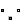
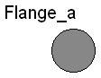
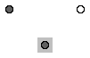
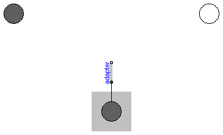
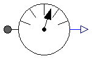
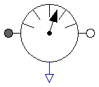

This package contains connectors and partial models for 1-dim. rotational mechanical components. The components of this package can only be used as basic building elements for models.
| Name | Description |
|---|---|
| Flange_a | 1D rotational flange (filled square icon) |
| 1D rotational flange (non-filled square icon) | |
| Rigid | Base class for the rigid connection of two rotational 1D flanges |
| Compliant | Base class for the compliant connection of two rotational 1D flanges |
| TwoFlanges | Base class for a component with two rotational 1D flanges |
|  Bearing | Base class for interface classes with bearing connector |
| TwoFlangesAndBearing | Base class for a equation-based component with two rotational 1D flanges and one rotational 1D bearing flange |
| TwoFlangesAndBearingH | Base class for a hierarchically composed component with two rotational 1D flanges and one rotational bearing flange |
| FrictionBase | Base class of Coulomb friction elements |
| AbsoluteSensor | Base class to measure a single absolute flange variable |
| Base class to measure a single relative variable between two flanges | |
| PartialSpeedDependentTorque | Partial model of a torque acting at the flange (accelerates the flange) |
 Modelica.Mechanics.Rotational.Interfaces.Flange_a
Modelica.Mechanics.Rotational.Interfaces.Flange_a
This is a connector for 1D rotational mechanical systems and models a mechanical flange. The following variables are defined in this connector:
phi: Absolute rotation angle of the flange in [rad]. tau: Cut-torque in the flange in [Nm].
There is a second connector for flanges: Flange_b. The connectors Flange_a and Flange_b are completely identical. There is only a difference in the icons, in order to easier identify a flange variable in a diagram. For a discussion on the actual direction of the cut-torque tau and of the rotation angle, see the information text of package Rotational (section 4. Sign conventions).
If needed, the absolute angular velocity w and the absolute angular acceleration a of the flange can be determined by differentiation of the flange angle phi:
w = der(phi); a = der(w)
| Type | Name | Description |
|---|---|---|
| Angle | phi | Absolute rotation angle of flange [rad] |
| flow Torque | tau | Cut torque in the flange [N.m] |
connector Flange_a "1D rotational flange (filled square icon)" SI.Angle phi "Absolute rotation angle of flange"; flow SI.Torque tau "Cut torque in the flange"; end Flange_a;
 Modelica.Mechanics.Rotational.Interfaces.Flange_b
Modelica.Mechanics.Rotational.Interfaces.Flange_b

This is a connector for 1D rotational mechanical systems and models a mechanical flange. The following variables are defined in this connector:
phi: Absolute rotation angle of the flange in [rad]. tau: Cut-torque in the flange in [Nm].
There is a second connector for flanges: Flange_a. The connectors Flange_a and Flange_b are completely identical. There is only a difference in the icons, in order to easier identify a flange variable in a diagram. For a discussion on the actual direction of the cut-torque tau and of the rotation angle, see the information text of package Rotational (section 4. Sign conventions).
If needed, the absolute angular velocity w and the absolute angular acceleration a of the flange can be determined by differentiation of the flange angle phi:
w = der(phi); a = der(w)
| Type | Name | Description |
|---|---|---|
| Angle | phi | Absolute rotation angle of flange [rad] |
| flow Torque | tau | Cut torque in the flange [N.m] |
connector Flange_b "1D rotational flange (non-filled square icon)" SI.Angle phi "Absolute rotation angle of flange"; flow SI.Torque tau "Cut torque in the flange"; end Flange_b;
 Modelica.Mechanics.Rotational.Interfaces.Rigid
Modelica.Mechanics.Rotational.Interfaces.Rigid

This is a 1D rotational component with two rigidly connected flanges, i.e., flange_a.phi = flange_b.phi. It is used e.g. to built up components with inertia.
| Type | Name | Description |
|---|---|---|
| Flange_a | flange_a | (left) driving flange (flange axis directed INTO cut plane) |
| Flange_b | flange_b | (right) driven flange (flange axis directed OUT OF cut plane) |
partial model Rigid
"Base class for the rigid connection of two rotational 1D flanges"
SI.Angle phi
"Absolute rotation angle of component (= flange_a.phi = flange_b.phi)";
Flange_a flange_a
"(left) driving flange (flange axis directed INTO cut plane)";
Flange_b flange_b
"(right) driven flange (flange axis directed OUT OF cut plane)";
equation
flange_a.phi = phi;
flange_b.phi = phi;
end Rigid;
Modelica.Mechanics.Rotational.Interfaces.Compliant
This is a 1D rotational component with a compliant connection of two rotational 1D flanges where inertial effects between the two flanges are neglected. The basic assumption is that the cut-torques of the two flanges sum-up to zero, i.e., they have the same absolute value but opposite sign: flange_a.tau + flange_b.tau = 0. This base class is used to built up force elements such as springs, dampers, friction.
| Type | Name | Description |
|---|---|---|
| Flange_a | flange_a | (left) driving flange (flange axis directed INTO cut plane) |
| Flange_b | flange_b | (right) driven flange (flange axis directed OUT OF cut plane) |
partial model Compliant
"Base class for the compliant connection of two rotational 1D flanges"
SI.Angle phi_rel(start=0)
"Relative rotation angle (= flange_b.phi - flange_a.phi)";
SI.Torque tau "Torque between flanges (= flange_b.tau)";
Flange_a flange_a
"(left) driving flange (flange axis directed INTO cut plane)";
Flange_b flange_b
"(right) driven flange (flange axis directed OUT OF cut plane)";
equation
phi_rel = flange_b.phi - flange_a.phi;
flange_b.tau = tau;
flange_a.tau = -tau;
end Compliant;
Modelica.Mechanics.Rotational.Interfaces.TwoFlanges
This is a 1D rotational component with two flanges. It is used e.g. to build up parts of a drive train consisting of several base components. There are specialized versions of this base class for rigidly connected flanges (Interfaces.Rigid) and for a compliant connection of flanges (Interfaces.Compliant).
| Type | Name | Description |
|---|---|---|
| Flange_a | flange_a | |
| Flange_b | flange_b |
partial model TwoFlanges "Base class for a component with two rotational 1D flanges" Flange_a flange_a; Flange_b flange_b; end TwoFlanges;
 Modelica.Mechanics.Rotational.Interfaces.Bearing
Modelica.Mechanics.Rotational.Interfaces.Bearing

This is a 1D rotational component with two flanges and an additional bearing flange. It is a superclass for the two components TwoFlangesAndBearing and TwoFlangesAndBearingH.
| Type | Name | Description |
|---|---|---|
| Flange_a | flange_a | |
| Flange_b | flange_b | |
| Flange_a | bearing |
partial model Bearing "Base class for interface classes with bearing connector" extends TwoFlanges; SI.Torque tau_support; Flange_a bearing; end Bearing;
Modelica.Mechanics.Rotational.Interfaces.TwoFlangesAndBearing
This is a 1D rotational component with two flanges and an additional bearing flange. It is used e.g. to build up equation-based parts of a drive train.
| Type | Name | Description |
|---|---|---|
| Flange_a | flange_a | |
| Flange_b | flange_b | |
| Flange_a | bearing |
partial model TwoFlangesAndBearing
"Base class for a equation-based component with two rotational 1D flanges and one rotational 1D bearing flange"
extends Bearing;
SI.Angle phi_a;
SI.Angle phi_b;
equation
if cardinality(bearing) == 0 then
bearing.phi = 0;
else
bearing.tau = tau_support;
end if;
0 = flange_a.tau + flange_b.tau + tau_support;
phi_a = flange_a.phi - bearing.phi;
phi_b = flange_b.phi - bearing.phi;
end TwoFlangesAndBearing;
Modelica.Mechanics.Rotational.Interfaces.TwoFlangesAndBearingH
This is a 1D rotational component with two flanges and an additional bearing flange. It is used e.g. to build up parts of a drive train consisting of several base components.
| Type | Name | Description |
|---|---|---|
| Flange_a | flange_a | |
| Flange_b | flange_b | |
| Flange_a | bearing |
partial model TwoFlangesAndBearingH
"Base class for a hierarchically composed component with two rotational 1D flanges and one rotational bearing flange"
extends Bearing;
Adapter adapter(bearingConnected=cardinality(bearing) > 1);
protected
encapsulated model Adapter
import Modelica.Mechanics.Rotational.Interfaces.TwoFlanges;
extends TwoFlanges;
parameter Boolean bearingConnected;
equation
flange_a.phi = flange_b.phi;
if bearingConnected then
0 = flange_a.tau + flange_b.tau;
else
0 = flange_a.phi;
end if;
end Adapter;
equation
tau_support = -adapter.flange_b.tau;
connect(adapter.flange_a, bearing);
end TwoFlangesAndBearingH;
Basic model for Coulomb friction that models the stuck phase in a reliable way.
| Type | Name | Default | Description |
|---|---|---|---|
| Advanced | |||
| AngularVelocity | w_small | 1e10 | Relative angular velocity near to zero if jumps due to a reinit(..) of the velocity can occur (set to low value only if such impulses can occur) [rad/s] |
partial model FrictionBase "Base class of Coulomb friction elements"
// parameter SI.AngularVelocity w_small=1 "Relative angular velocity near to zero (see model info text)";
parameter SI.AngularVelocity w_small=1e10
"Relative angular velocity near to zero if jumps due to a reinit(..) of the velocity can occur (set to low value only if such impulses can occur)";
// Equations to define the following variables have to be defined in subclasses
SI.AngularVelocity w_relfric
"Relative angular velocity between frictional surfaces";
SI.AngularAcceleration a_relfric
"Relative angular acceleration between frictional surfaces";
SI.Torque tau
"Friction torque (positive, if directed in opposite direction of w_rel)";
SI.Torque tau0 "Friction torque for w=0 and forward sliding";
SI.Torque tau0_max "Maximum friction torque for w=0 and locked";
Boolean free "true, if frictional element is not active";
// Equations to define the following variables are given in this class
Real sa "Path parameter of friction characteristic tau = f(a_relfric)";
Boolean startForward(start=false, fixed=true)
"true, if w_rel=0 and start of forward sliding or w_rel > w_small";
Boolean startBackward(start=false, fixed=true)
"true, if w_rel=0 and start of backward sliding or w_rel < -w_small";
Boolean locked(start=false) "true, if w_rel=0 and not sliding";
constant Integer Unknown=3 "Value of mode is not known";
constant Integer Free=2 "Element is not active";
constant Integer Forward=1 "w_rel > 0 (forward sliding)";
constant Integer Stuck=0
"w_rel = 0 (forward sliding, locked or backward sliding)";
constant Integer Backward=-1 "w_rel < 0 (backward sliding)";
Integer mode(
final min=Backward,
final max=Unknown,
start=Unknown,
fixed=true);
protected
constant SI.AngularAcceleration unitAngularAcceleration = 1;
constant SI.Torque unitTorque = 1;
equation
/* Friction characteristic
(locked is introduced to help the Modelica translator determining
the different structural configurations, if for each configuration
special code shall be generated) */
startForward = pre(mode) == Stuck and (sa > tau0_max/unitTorque or pre(startForward)
and sa > tau0/unitTorque) or pre(mode) == Backward and w_relfric > w_small or
initial() and (w_relfric > 0);
startBackward = pre(mode) == Stuck and (sa < -tau0_max/unitTorque or pre(
startBackward) and sa < -tau0/unitTorque) or pre(mode) == Forward and w_relfric <
-w_small or initial() and (w_relfric < 0);
locked = not free and not (pre(mode) == Forward or startForward or pre(
mode) == Backward or startBackward);
a_relfric = unitAngularAcceleration *
(if locked then 0 else if free then sa else if startForward then
sa - tau0/unitTorque else if startBackward then sa + tau0/unitTorque else if pre(mode)
== Forward then sa - tau0/unitTorque else sa + tau0/unitTorque);
/* Friction torque has to be defined in a subclass. Example for a clutch:
tau = if locked then sa else if free then 0 else cgeo*fn*
(if startForward then Math.tempInterpol1( w_relfric, mue_pos, 2) else
if startBackward then -Math.tempInterpol1(-w_relfric, mue_pos, 2) else
if pre(mode) == Forward then Math.tempInterpol1( w_relfric, mue_pos, 2)
else -Math.tempInterpol1(-w_relfric, mue_pos, 2)); */
// finite state machine to determine configuration
mode = if free then Free else (if (pre(mode) == Forward or pre(mode) ==
Free or startForward) and w_relfric > 0 then Forward else if (pre(mode)
== Backward or pre(mode) == Free or startBackward) and w_relfric < 0 then
Backward else Stuck);
end FrictionBase;

This is the base class of a 1D rotational component with one flange and one output signal y in order to measure an absolute kinematic quantity in the flange and to provide the measured signal as output signal for further processing with the blocks of package Modelica.Blocks.
| Type | Name | Description |
|---|---|---|
| Flange_a | flange_a | (left) flange to be measured (flange axis directed INTO cut plane) |
| output RealOutput | y |
partial model AbsoluteSensor
"Base class to measure a single absolute flange variable"
extends Modelica.Icons.RotationalSensor;
Flange_a flange_a
"(left) flange to be measured (flange axis directed INTO cut plane)";
Modelica.Blocks.Interfaces.RealOutput y;
end AbsoluteSensor;

This is a base class for 1D rotational components with two rigidly connected flanges and one output signal y in order to measure relative kinematic quantities between the two flanges or the cut-torque in the flange and to provide the measured signal as output signal for further processing with the blocks of package Modelica.Blocks.
| Type | Name | Description |
|---|---|---|
| Flange_a | flange_a | (left) driving flange (flange axis directed INTO cut plane) |
| Flange_b | flange_b | (right) driven flange (flange axis directed OUT OF cut plane) |
| output RealOutput | y |
partial model RelativeSensor
"Base class to measure a single relative variable between two flanges"
extends Modelica.Icons.RotationalSensor;
Flange_a flange_a
"(left) driving flange (flange axis directed INTO cut plane)";
Flange_b flange_b
"(right) driven flange (flange axis directed OUT OF cut plane)";
Modelica.Blocks.Interfaces.RealOutput y;
end RelativeSensor;

Partial model of torque dependent on speed that accelerates the flange.
| Type | Name | Description |
|---|---|---|
| Flange_b | flange | Flange on which torque is acting |
| Flange_a | bearing | Bearing at which the reaction torque (i.e., -flange.tau) is acting |
partial model PartialSpeedDependentTorque
"Partial model of a torque acting at the flange (accelerates the flange)"
Modelica.SIunits.AngularVelocity w = der(flange.phi)
"Angular velocity at flange";
Modelica.SIunits.Torque tau = flange.tau
"accelerating torque acting at flange";
Modelica.Mechanics.Rotational.Interfaces.Flange_b flange
"Flange on which torque is acting";
Modelica.Mechanics.Rotational.Interfaces.Flange_a bearing
"Bearing at which the reaction torque (i.e., -flange.tau) is acting";
equation
if cardinality(bearing) == 0 then
bearing.phi = 0;
else
bearing.tau = -flange.tau;
end if;
end PartialSpeedDependentTorque;
 Modelica.Mechanics.Rotational.Interfaces.TwoFlangesAndBearingH.Adapter
Modelica.Mechanics.Rotational.Interfaces.TwoFlangesAndBearingH.Adapter
encapsulated model Adapter
import Modelica.Mechanics.Rotational.Interfaces.TwoFlanges;
extends TwoFlanges;
parameter Boolean bearingConnected;
equation
flange_a.phi = flange_b.phi;
if bearingConnected then
0 = flange_a.tau + flange_b.tau;
else
0 = flange_a.phi;
end if;
end Adapter;